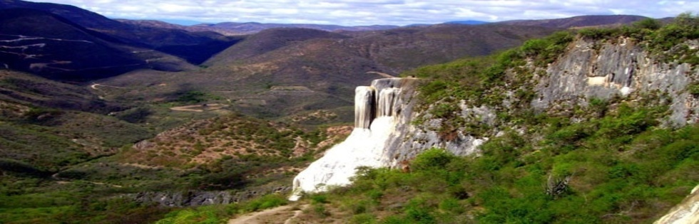
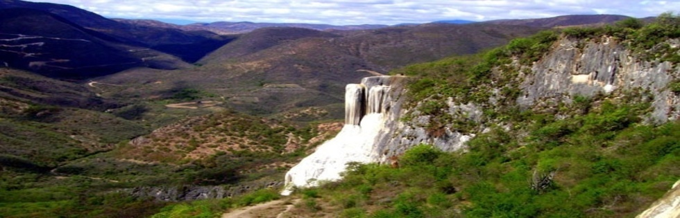

Accommodation
Where will I be staying?
Participants of CMO workshops will stay at one of three hotels in Oaxaca: the Hotel Hacienda Los Laureles, the Hotel Angel Inn or the Hotel Cupulas. You will receive notice in your registration package (approximately four weeks in advance) to which hotel you have been assigned.
All of the designated hotels are located within a close vicinity to the workshop venue. If for any accessibility or other reason you are unable to walk (approximately 10 minutes) by foot and would need to stay at the closest hotel, please indicate this preference at least two weeks prior to the workshop start date (to cmo-birs2015@cimat.mx) and we will do our best to accommodate you.
For how long can I stay at the facility?
Participants in 5-day workshops can check into their hotel on Sunday and typically remain until the Friday of the same week.
If you plan to arrive before Sunday or intend to remain in Oaxaca or Mexico beyond Friday, please note that you will be expected to book your own accommodation. The Hotel Hacienda Los Laureles and the Hotel Angel Inn will both offer a 30% discount to CMO participants, however, due to other workshops, this is subject to availability. Other accommodation may be found using Trip Advisor.
May I bring a guest?
Yes. However, please note that if you bring guests, they will have to pay for their own meals. As well, there will be an additional room charge per night for guests: Hotel Hacienda Los Laureles - 714 Mexican pesos (including taxes); Hotel Angel Inn - 238 Mexican pesos (including taxes); Hotel Las Cupulas - 200 Mexican pesos (including taxes).
Do I need to stay in CMO's accommodation?
Accommodation at the Hotel Hacienda Los Laureles is automatically granted to all workshop participants. If, however, you do not feel that such accommodation is right for you, a number of alternatives are available. CMO recommends using Trip Advisor to find alternatives.
What sorts of amenities are available in my room?
Each room has air conditioning/heating, towels, cotton bathrobes, hairdryer, soaps and shampoos, classic-style furnishings, 25 inch color television, wireless Internet in all areas and office center.
Is there a way for me to get my laundry done at the hotel?
Yes. Laundry services are available to all hotel guests.
If I have mobility issues, will I be able to navigate the CMO and hotel accommodation?
Please include your request in your registration, at least two weeks in advance, and confirm via email at cmo-birs2015@cimat.mx.
Is there a telephone line through which I can be reached during my stay with CMO?
Yes, there will be a telephone in each room. Once you have received your hotel assignment, you may have your calls directed either to Hotel Hacienda Los Laureles: +52 951 501-5300 or Hotel Angel Inn: +52 951 133-6128 or +52 951 133-6129.